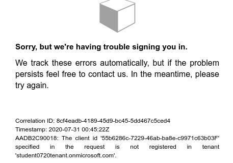

In this studio you will work with a partner to explore the effect of authorization in requests sent to the API. After an initial setup you will explore tasks that will require you both to plan, execute and reflect on the results.
These tasks will require you and a partner to interact using two different user accounts that are both registered within a single AADB2C tenant. One of these accounts will be used as the Owner of a coding event, and the other will be a Member of that coding event.
Using the two accounts together you can reflect on the authorization process by comparing the similarities and differences between the API responses.
Your learning goals for this studio are:
The Owner will be responsible for providing the Member with:
In each task the Owner and the Member will work together to set up an initial state with the API. Then both of you will make requests to complete the task and reflect on the responses and resource state transitions encountered along the way.
In general, each task will require you and your partner to:
In order to coordinate and plan these steps you and your partner will need to consider:
There are multiple ways to set up Postman so both you and your partner can request access tokens from the Owner’s AADB2C service. The simpler mechanism is to share all of the Owner’s Postman access token settings with the Member. This will include the Client ID of the Owner’s registered Postman application.
However, if you are looking for a challenge the bonus section below will have the Owner register a new client application with its own client ID for the Member to use. Either of these approaches will require you to update the Coding Events API collection in Postman.
Before you can make requests to the Coding Events API both you and your partner will need to change the baseUrl environment variable in the Postman collection. The baseUrl will need its value updated to point at the public IP address of the Owner’s deployed API.
Note
The Owner must send the Postman access token form settings to the Member.
In Postman, edit the collection (using the three dots to the right of its name) and select the Variables tab. In the Current Value entry on the right side replace the current value, https://localhost:5001, with the public IP address:
In addition to sharing the public IP, the Owner will need to provide:
user_impersonation scope exposed by the registered Coding Events API applicationThe Member will then need to select the Authorization tab and update their access token settings to use the Owner’s Postman access token settings and request a token.
note
Initially each of your settings will reference your respective tenants. However, the Member must update their settings to match the Owner’s settings so the member can create an account with the Owner’s tenant.
The Owner should already have an account registered in their AADB2C tenant. However, the Member will need to register their own account in the Owner’s tenant. As a reminder, the Member can use the sign up now link at the bottom of the login form.
You can simulate a system that has several different client applications that interact with a single protected API. In this system each client application must register with the AADB2C tenant in order to uniquely identify itself. By doing so requests from each client application can be individually monitored and controlled.
For this bonus mission, instead of the Owner sharing the client ID of their Postman application, they will register a new one in their AADB2C tenant. This will allow you and your partner to simulate a multi-client system using AADB2C.
note
The Member will still need to update their access token settings to reference the Owner’s tenant information.
After updating the access token settings, this bonus will require the Member to update the client ID field to reference the newly created client ID of the <Member Name> Postman application.
The Owner will register another application in their AADB2C tenant that corresponds to the Member’s Postman application. The <Member Name> Postman application will need to be registered and granted access to use the user_impersonation scope of the API.
After completing the registration and configuration the Owner will share the new <Member Name> Postman client ID with the Member so they can update the client ID field of the access token form in Postman.
Note
You can refer to the access token walkthrough as a refresher of this process.
After completing this bonus mission the Owner’s AADB2C tenant should have 2 registered front-end client applications (Owner’s Postman and the new <Member Name> Postman). Each of these should have admin consent for using the user_impersonation scope to access the protected API.
Each task will begin with a plain-English action to be performed on the state of one or more resources. Following this prompt will be a series of questions related to the actions and results:
Both the Owner and Member will attempt to complete each task. However, due to the different authorization attributes (ABAC) that each of you have, not all requests will be successful. It is equally important to consider the response behavior for both successful and unsuccessful requests.
Before you begin working on these tasks let’s explore a solution to the first one – Joining a Coding Event.
Try to join an existing coding event
What is the current state of the resources?
What should be the initial state of the resources to complete this task?
What requests will need to be made, in what order, and who must issue them to achieve this initial state?
POST /api/events/What endpoint will you need to use to complete this task?
POST /api/events/{CodingEventsId}/membersWhat was the response when the authenticated user (Member) tried to join the Owner’s coding event?
What was the response when the Owner tried to join their own coding event?
Note
The actual response body is formatted in a JSON object:
{
"type": "https://tools.ietf.org/html/rfc7231#section-6.5.1",
"title": "Bad Request",
"status": 400,
"traceId": "|239addd7-409244e32d9104cb."
}
What is the final state of the API resources after completing the task?
Use the example above as a solution template as you work with your partner to complete each task. Before making each request discuss what you expect to happen with your partner based on your respective authorizations.
If the results do not align with your expectations consider:
Warning
Before continuing with the studio make sure that both you and your partner are able to successfully request an access token.
If either of you receive the following message when requesting an access token it indicates that the client ID was not updated correctly:
Try to join an existing coding event
Try to access the email addresses of coding event members
email field available in the response to the Member?email field available in the response to the Owner?Try to add a new tag to the coding event
Try to remove the tag from the coding event
Try to remove a Member from the coding event
Try to leave the coding event
Note
In the previous task the Member was removed from the coding event. In order for both you and your partner to complete this task the Member will need to re-join the coding event.
Try to cancel the coding event